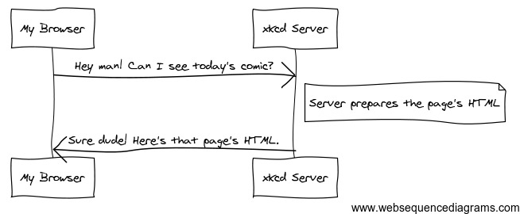

Web development 101
Understanding the fundamentals of web development is crucial for every JavaScript developer. Let's dive into this topic.
Note
Some of this chapter is inspired by the Symfony PHP framework documentation.
How the Web works
Surfing the web is easy as pie. Let's say you want to read today's comic from the popular web site xkcd. You type the text "xkcd.com" in your browser's address bar and voila, the comic appears (assuming no network issues).
Let's try to understand what's going on behind the scene.
Web servers
To be online, a web site has to be published on a server. This is a special kind of machine whose task is to listen and answer to the demands of clients. A server that publishes resources on the Web is logically called a web server.
More precisely, a web server machine runs a particular software program (also called a web server) able to publish web sites. The most popular ones are Apache, Microsoft IIS and nginx.
Web clients
The machine asking a server for a resource is called a web client. Actually, the real client is a software program running on the machine. A well-known type of web client is the browser, a program specialized in displaying web pages. Famous web browsers include Mozilla Firefox, Chrome, Safari and Opera.
Not all web clients are browsers, through. For example, search engines robots and mobile applications also contact servers and ask them for content.
Communications between clients and servers
Data exchanges on the Web follow a request/response paradigm.

- The exchange is started by the client, which sends a request to the server to access a particular web resource.
- The server prepares a result for the request.
- The server send backs this result to the client.
To understand each other, web clients and servers use a common protocol: HTTP.
HTTP, the web protocol
HTTP, which stands for HyperText Transfer Protocol, is the technical foundation of the World Wide Web. It is a protocol, a language that allows two machines to communicate with each other. HTTPS is the secured version of HTTP where exchanged data is encrypted.
Technically speaking, HTTP is a pretty simple protocol based on textual commands.
Anatomy of an HTTP request
Let's study the first part of the web exchange described previously: the request.

This HTTP request comes under the form of a multi-line piece of text similar to the following one:
The most important line is the first one. It contains:
- The HTTP method (the request type, also named command). Here, the
GETmethod indicates a resource access request. - The requested resource. Here,
/(root symbol) indicates a request for the default document. - The HTTP protocol version, here 1.1.
The other lines of text are called header fields. They give more information about the client request: server name (Host), accepted content types (Accept), client software details (User-Agent). There are many other possible header fields.
The main HTTP methods are GET to access a resource and POST to push some information on the server. Other ones exist, such as HEAD, PUT or DELETE.
Anatomy of an HTTP response
When receiving an HTTP request, the server looks inside for information. It then builds an appropriate answer and sends it back.
The HTTP response sent by the server looks something like this.
HTTP/1.1 200 OK
Date: Fri, 22 Apr 2017 18:05:05 GMT
Server: Apache/2.2
Content-Type: text/html
<html>
<!-- HTML code of the page -->
<!-- ... -->
</html>
The first line contains the response status: a three-digit number indicating the request result. Other lines are header fields (Date, Content-Type, etc) giving additional info about the response.
An HTTP response might also include data. In this example, it contains the HTML code of the web page corresponding to the requested resource.
HTTP status codes
The HTTP status codes belong to different families, depending on their first digit.
| Family | Meaning | Examples |
|---|---|---|
| 1xx | Information | |
| 2xx | Success | 200: request handled successfully |
| 3xx | Redirection | |
| 4xx | Client error | 404: resource not found |
| 5xx | Server error | 500: internal server error |
Note
For a more in-depth presentation of the HTTP protocol, head over to the Mozilla Developer Network.
Addressing a resource with a URL
Web sites are usually accessed using their address, a piece of text of the form: http://www.sitename.com/path/to/resource
This address can be split into several subparts:
http://means an access through the HTTP protocol.www.sitename.comis the domain name of the web site./path/to/resourceis the path of the requested resource.
An address like this one is called a URL, or Uniform Resource Locator. A URL uniquely describes a web resource and the way to request it.
From web sites to web apps
The web development models
In a traditional web development scenario, when you click a link or submit a form, your browser sends to the server a request that returns a full new web page tailored to your request. This model is subject to longer load times and limited interactivity.
Another web development model aims to avoid transmitting a whole new page for each user action. Here's how things works in that model:
- User actions on the page are intercepted through JavaScript event handlers.
- HTTP requests are sent to the server without interrupting the navigation on the page.
- Only the needed portions of the page are updated with the requests' results.
Albeit more challenging, this web development model can lead to limited resource loads, improved interactivity and a user experience nearly on par with native applications.
The set of technologies enabling the creation of web applications is codenamed AJAX (Asynchronous JavaScript and XML). An AJAX call is an asynchronous HTTP request made to retrieve or send data from/to a server.
Synchronous vs asynchronous requests
In a synchronous exchange, the asker waits until he gets the needed info. A telephone call is an example of a synchronous exchange.
On the contrary, the asker in an asynchronous exchange can do something else while waiting for the completion of his request. Email is an example of an asynchronous exchange.
The traditional web development model uses synchronous requests: the web client is blocked while waiting for the server to complete its request. The AJAX model uses asynchronous requests: data is fetched when needed in the background.
Cross-domain requests
For security reasons, many websites have a conservative policy regarding AJAX requests. This same origin policy states that requests are limited to their origin domain: "http://mysite" cannot send a request to "http://anothersite". This prevents some servers to be accessible via AJAX calls.
Enabling cross-domain requests is done by setting on cross-origin resource sharing (CORS) in the server configuration.
Note
For more information about this topic, check out this article.
JSON, a data format for the web
The "X" letter in AJAX stands for XML, a generic markup language that used to be the standard for cross-platform data exchanges. While still in use, XML is quite verbose and tends to be replaced by JSON as the standard data format on the web.
JSON, or JavaScript Object Notation, is a textual syntax for describing structured information. As you'll see in the following example, JSON borrows heavily from the JavaScript object syntax.
{
"cars": [
{
"model": "Peugeot",
"color": "blue",
"registration": 2012,
"checkups": [2015, 2017]
},
{
"model": "Citroën",
"color": "white",
"registration": 1999,
"checkups": [2003, 2005, 2007, 2009, 2011, 2013]
}
]
}
A JSON document is a set of name/value pairs. Names are always within double quotes "". Values can be numbers, strings, booleans, arrays or objects.
Many programming languages have native support for the JSON format... Including JavaScript, of course!
TL;DR
-
Data exchanges on the Web follow a request/response paradigm. A client issues a request to a server, which process it and sends back its result to the client.
-
HTTP (HyperText Transfer Protocol), is the protocol that allows two machines to communicate with each other on the web. Its secured version is HTTPS.
-
HTTP is based on textual commands. The HTTP method defines the type of the request. The main HTTP methods are
GETto access a resource andPOSTto push some information on the server. -
An HTTP response contains a status code indicating the result of the request: 200 for success, 404 for a resource not found, etc.
-
Web resources are uniquely addressed by their URL (Uniform resource locator). A URL is a text of the form
http://www.mywebsite.com/myresourcepath/myresource. -
In a traditional web development scenario, user actions on a page trigger a full reload after a synchronous request to a server. Another web development model, nicknamed AJAX (Asynchronous JavaScript and XML), uses JavaScript and asynchronous HTTP requests to fetch data when needed and update only the desired portions of the page. This enables the creation of web applications, aiming to offer the user experience of a native app.
-
Cross-domain AJAX requests are only possible if the server has been configured to accept them by setting on cross-origin resource sharing (CORS).
-
JSON (JavaScript Object Notation), a textual syntax for describing structured information, has replaced XML as the data format of the web. A JSON document is a set of name/value pairs.